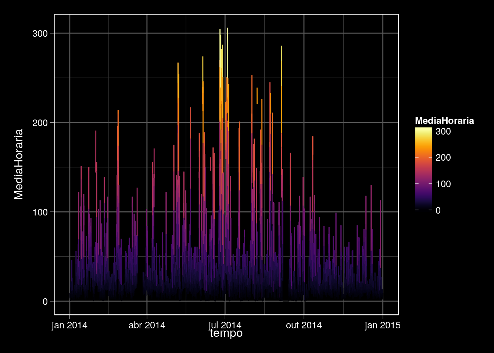

Capítulo 4 Importando e Exportando Dados
4.1 Base
4.1.1 Importando com read.*
Como vimos anteriormente, na maioria dos casos, iremos usar data frames par lidar com dados em R, sendo assim, podemos utilizar os seguintes modos de leitura:
read.csv
read.csv2
read.table
Vamos ler alguns dados usando read.table. Para saber o que a função faz, use ?read.table.
Os argumentos da função são:
args(read.table)## function (file, header = FALSE, sep = "", quote = "\"'", dec = ".",
## numerals = c("allow.loss", "warn.loss", "no.loss"), row.names,
## col.names, as.is = !stringsAsFactors, na.strings = "NA",
## colClasses = NA, nrows = -1, skip = 0, check.names = TRUE,
## fill = !blank.lines.skip, strip.white = FALSE, blank.lines.skip = TRUE,
## comment.char = "#", allowEscapes = FALSE, flush = FALSE,
## stringsAsFactors = default.stringsAsFactors(), fileEncoding = "",
## encoding = "unknown", text, skipNul = FALSE)
## NULLO terceiro argumento é sep, definido como "" por padrão. Esse argumento indica para o R qual o tipo de separador utilizado entre as colunas dos dados.
df <- read.table("dados/NOXIPEN2014.txt")Lembre-se que as funções head e tail permitem que você veja as primeiras ou últimas linhas do data frame.
head(df)## TipodeRede TipodeMonitoramento Tipo Data Hora
## 2 Automático CETESB Dados Primários 01/01/2014 01:00
## 3 Automático CETESB Dados Primários 01/01/2014 02:00
## 4 Automático CETESB Dados Primários 01/01/2014 03:00
## 5 Automático CETESB Dados Primários 01/01/2014 04:00
## 6 Automático CETESB Dados Primários 01/01/2014 05:00
## 7 Automático CETESB Dados Primários 01/01/2014 06:00
## CodigoEstaÃ.Ã.o NomeEstaÃ.Ã.o NomeParÃ.metro
## 2 95 Cid.Universitária-USP-Ipen NOx (Óxidos de Nitrogênio)
## 3 95 Cid.Universitária-USP-Ipen NOx (Óxidos de Nitrogênio)
## 4 95 Cid.Universitária-USP-Ipen NOx (Óxidos de Nitrogênio)
## 5 95 Cid.Universitária-USP-Ipen NOx (Óxidos de Nitrogênio)
## 6 95 Cid.Universitária-USP-Ipen NOx (Óxidos de Nitrogênio)
## 7 95 Cid.Universitária-USP-Ipen NOx (Óxidos de Nitrogênio)
## UnidadedeMedida MediaHoraria MediaMovel Valido
## 2 ppb 9 - Não
## 3 ppb 9 - Sim
## 4 ppb 5 - Sim
## 5 ppb 4 - Sim
## 6 ppb 5 - Sim
## 7 ppb 5 - Simtail(df)## TipodeRede TipodeMonitoramento Tipo Data Hora
## 8577 Automático CETESB Dados Primários 01/01/2015 19:00
## 8578 Automático CETESB Dados Primários 01/01/2015 20:00
## 8579 Automático CETESB Dados Primários 01/01/2015 21:00
## 8580 Automático CETESB Dados Primários 01/01/2015 22:00
## 8581 Automático CETESB Dados Primários 01/01/2015 23:00
## 8582 Automático CETESB Dados Primários 01/01/2015 24:00
## CodigoEstaÃ.Ã.o NomeEstaÃ.Ã.o
## 8577 95 Cid.Universitária-USP-Ipen
## 8578 95 Cid.Universitária-USP-Ipen
## 8579 95 Cid.Universitária-USP-Ipen
## 8580 95 Cid.Universitária-USP-Ipen
## 8581 95 Cid.Universitária-USP-Ipen
## 8582 95 Cid.Universitária-USP-Ipen
## NomeParÃ.metro UnidadedeMedida MediaHoraria MediaMovel
## 8577 NOx (Óxidos de Nitrogênio) ppb 3 -
## 8578 NOx (Óxidos de Nitrogênio) ppb 8 -
## 8579 NOx (Óxidos de Nitrogênio) ppb 11 -
## 8580 NOx (Óxidos de Nitrogênio) ppb 11 -
## 8581 NOx (Óxidos de Nitrogênio) ppb 16 -
## 8582 NOx (Óxidos de Nitrogênio) ppb NA -
## Valido
## 8577 Sim
## 8578 Sim
## 8579 Sim
## 8580 Sim
## 8581 Sim
## 8582 SimVamos tentar ler outra versão dos mesmos dados utilizando a mesma função read.table:
df2 <- read.table("dados/NOXIPEN2014v2.txt")## Error in scan(file = file, what = what, sep = sep, quote = quote, dec = dec, : linha 1 não tinha 6 elementosApareceu uma mensagem de erro, você saberia dizer o porquê?
Caso você trabalhe com algum banco de dados em formato .txt e quiser abrir no R… Abra-os no bloco de notas primeiro!
Vamos dar uma olhada em alguns dados, o primeiro tem uma cara assim:

Já o segundo arquivo é assim:

Você notou a diferença? Como vimos anteriormente, para importar os dados no R é super importante que você especifique o tipo de separador utilizado. Como o segundo arquivo é separado por “;”, precisamos espercificar o argumento sep na hora de usar o comando read.table:
df2 <- read.table("dados/NOXIPEN2014v2.txt", sep = ";")
head(df2)## TipodeRede TipodeMonitoramento Tipo Data Hora
## 2 Automático CETESB Dados Primários 01/01/2014 01:00
## 3 Automático CETESB Dados Primários 01/01/2014 02:00
## 4 Automático CETESB Dados Primários 01/01/2014 03:00
## 5 Automático CETESB Dados Primários 01/01/2014 04:00
## 6 Automático CETESB Dados Primários 01/01/2014 05:00
## 7 Automático CETESB Dados Primários 01/01/2014 06:00
## CodigoEstaÃ.Ã.o NomeEstaÃ.Ã.o NomeParÃ.metro
## 2 95 Cid.Universitária-USP-Ipen NOx (Óxidos de Nitrogênio)
## 3 95 Cid.Universitária-USP-Ipen NOx (Óxidos de Nitrogênio)
## 4 95 Cid.Universitária-USP-Ipen NOx (Óxidos de Nitrogênio)
## 5 95 Cid.Universitária-USP-Ipen NOx (Óxidos de Nitrogênio)
## 6 95 Cid.Universitária-USP-Ipen NOx (Óxidos de Nitrogênio)
## 7 95 Cid.Universitária-USP-Ipen NOx (Óxidos de Nitrogênio)
## UnidadedeMedida MediaHoraria MediaMovel Valido
## 2 ppb 9 - Não
## 3 ppb 9 - Sim
## 4 ppb 5 - Sim
## 5 ppb 4 - Sim
## 6 ppb 5 - Sim
## 7 ppb 5 - Simtail(df2)## TipodeRede TipodeMonitoramento Tipo Data Hora
## 8577 Automático CETESB Dados Primários 01/01/2015 19:00
## 8578 Automático CETESB Dados Primários 01/01/2015 20:00
## 8579 Automático CETESB Dados Primários 01/01/2015 21:00
## 8580 Automático CETESB Dados Primários 01/01/2015 22:00
## 8581 Automático CETESB Dados Primários 01/01/2015 23:00
## 8582 Automático CETESB Dados Primários 01/01/2015 24:00
## CodigoEstaÃ.Ã.o NomeEstaÃ.Ã.o
## 8577 95 Cid.Universitária-USP-Ipen
## 8578 95 Cid.Universitária-USP-Ipen
## 8579 95 Cid.Universitária-USP-Ipen
## 8580 95 Cid.Universitária-USP-Ipen
## 8581 95 Cid.Universitária-USP-Ipen
## 8582 95 Cid.Universitária-USP-Ipen
## NomeParÃ.metro UnidadedeMedida MediaHoraria MediaMovel
## 8577 NOx (Óxidos de Nitrogênio) ppb 3 -
## 8578 NOx (Óxidos de Nitrogênio) ppb 8 -
## 8579 NOx (Óxidos de Nitrogênio) ppb 11 -
## 8580 NOx (Óxidos de Nitrogênio) ppb 11 -
## 8581 NOx (Óxidos de Nitrogênio) ppb 16 -
## 8582 NOx (Óxidos de Nitrogênio) ppb NA -
## Valido
## 8577 Sim
## 8578 Sim
## 8579 Sim
## 8580 Sim
## 8581 Sim
## 8582 SimAlém desses comandos, vocês também pode utilizar a opção Import Dataset do RStudio, permitindo que você tenha um “preview” dos dados - como no Excel, mas melhor!
Para mais informações sobre importar dados no R, dê uma olha nesse webnário.
4.1.2 Exportando com write.table
Exportar é bem facil. Vamos dar uma olhada nos argumentos da função write.table:
args(write.table)## function (x, file = "", append = FALSE, quote = TRUE, sep = " ",
## eol = "\n", na = "NA", dec = ".", row.names = TRUE, col.names = TRUE,
## qmethod = c("escape", "double"), fileEncoding = "")
## NULLSe temos um data frame com colunas de classe character, quote = TRUE quer dizer que o arquivo de texto resultante vai ter aspas nas colunas de caractere. Novamente, o argumento sep indica como podemos separar as colunas. Se você quiser abrir esses dados no excel, uma boa opção é utilizar os separadores “,”/“;”/" “/”“, sendo o último o separador que indica o espaçamento criado pela tecla TAB.
Já o argumento eol quer dizer end of line, e é uma forma de dizer ao R que a linha acaba ali. Por padrão, a opção row.names vem com a opção TRUE, mas sempre coloque a opção FALSE, caso contrário, será adicionada uma coluna com os índices das linhas. O argumento col.names indica se você quer nomear as suas colunas, o que é sempre uma boa ideia.
Exercício: Usando o conjunto de dados mtcars da base do R, exporte-o de uma forma que ele possa ser lido em algum Excel genérico. Não esqueça de usar o que foi ensinado acima.
4.1.3 Exportando objetos com save
Podemos salvar objetos do R com o comando save. Ele permite que você recarregue o objeto mais tarde.
args(save)## function (..., list = character(), file = stop("'file' must be specified"),
## ascii = FALSE, version = NULL, envir = parent.frame(), compress = isTRUE(!ascii),
## compression_level, eval.promises = TRUE, precheck = TRUE)
## NULLEssa função salva o objeto com a extensão .rda sendo que para carregá-lo de volta usamos a função load
args(load)## function (file, envir = parent.frame(), verbose = FALSE)
## NULLMuito cuidado ao utilizar esse comando, pois é bem possível cometer alguns deslizes, como trocar o nome do objeto. Veja esse exemplo abaixo:
#Primeiro vamos ler os dados do dia 01/06/2016 para uma estação automática do INMET de Paracatu:
paracatu <- read.csv(file = "dados/paracatu.csv", sep = ",") #lendo como csv
# Vamos dizer que queremos salvar apenas a coluna correspondente à temperatura máxima horária:
paracatu_temp <- paracatu$temp_max
#Agora vamos salvar o objeto do tipo numeric com o nome especificado:
save(paracatu_temp, file = "Temp_max.rda")Passado um tempo, queremos acessar de volta esse objeto, mas não lembramos se salvamos a temperatura máxima ou mínima, vamos confiar que foi a mínima:
load("Temp_min.rda")E assim descobrimos que não era… O que nos ensina a sempre guardar na memória quais variáveis que salvamos no ambiente R. O bom dessa função é que ela permite salvar com tipos de compressão, por exemplo compress = "xz".
4.1.4 Exportando objetos com saveRDS
Esta é uma das minhas funçoes favoritas no R, veja só o porquê:
saveRDS(paracatu_temp, "Temperatura.rds")frenteQ <- readRDS("Temperatura.rds")Você pode salvar seu objeto R de forma serializada e compactada com o argumento compress e na hora de chamar o objeto de volta é só usar readRDS e colocar o nome que você quiser.
4.1.5 Processando nossa data frame
Vamos revisar a classe de cada coluna do nosso data-frame com a função sapply, que será explicada em outro capítulo. Lembre-se, qualquer dúvida é só usar ?sapply.
sapply(df, class)## TipodeRede TipodeMonitoramento Tipo
## "factor" "factor" "factor"
## Data Hora CodigoEstaÃ.Ã.o
## "factor" "factor" "integer"
## NomeEstaÃ.Ã.o NomeParÃ.metro UnidadedeMedida
## "factor" "factor" "factor"
## MediaHoraria MediaMovel Valido
## "integer" "factor" "factor"Quando trabalhamos com séries temporais, é importante ter a variável tempo reconhecida como “tempo”, especificamente como classe “POSIXct”. Porém, a classe do tipo Data é “factor” assim como a Hora, o que pode ser ruim. Então, vamos criar uma variável de tempo mais padronizada com o formato 2018-06-06 00:12:41.
Para isso temos que juntar as variáveis Data e Hora. Faremos isso numa nova varável chamada “tempo_char”, adicionando-a diretamente no data frame com o cifrão (“$”). Podemos fazer isso com as funções paste ou paste0.
df$tempo_char <- paste(df$Data, df$Hora)
head(df$tempo_char)## [1] "01/01/2014 01:00" "01/01/2014 02:00" "01/01/2014 03:00"
## [4] "01/01/2014 04:00" "01/01/2014 05:00" "01/01/2014 06:00"class(df$tempo_char)## [1] "character"Melhorou, mas ainda tem clase character.
Para converter a nossa classe para POSIXct podemos usar a função as.POSIXct (olhe
?as.POSIXct). Seus argumentos são:
args(as.POSIXct)## function (x, tz = "", ...)
## NULLEntão, vamos criar outra variável tempo com o formato POSIXct:
df$tempo <- as.POSIXct(x = df$tempo_char, tz = "Americas/Sao_Paulo",
format = "%d/%m/%Y %H:%M")## Warning in strptime(x, format, tz = tz): unknown timezone 'Americas/
## Sao_Paulo'## Warning in as.POSIXct.POSIXlt(as.POSIXlt(x, tz, ...), tz, ...): unknown
## timezone 'Americas/Sao_Paulo'head(df$tempo)## Warning in as.POSIXlt.POSIXct(x, tz): unknown timezone 'Americas/Sao_Paulo'## [1] "2014-01-01 01:00:00 GMT" "2014-01-01 02:00:00 GMT"
## [3] "2014-01-01 03:00:00 GMT" "2014-01-01 04:00:00 GMT"
## [5] "2014-01-01 05:00:00 GMT" "2014-01-01 06:00:00 GMT"class(df$tempo)## [1] "POSIXct" "POSIXt"Agora, vamos extrair os dias da semana do tempo, mes e dia juliano:
df$weekdays <- format(df$tempo, "%A")## Warning in as.POSIXlt.POSIXct(x, tz): unknown timezone 'Americas/Sao_Paulo'head(df$weekdays)## [1] "quarta-feira" "quarta-feira" "quarta-feira" "quarta-feira"
## [5] "quarta-feira" "quarta-feira"df$mes <- format(df$tempo, "%B")## Warning in as.POSIXlt.POSIXct(x, tz): unknown timezone 'Americas/Sao_Paulo'head(df$mes)## [1] "janeiro" "janeiro" "janeiro" "janeiro" "janeiro" "janeiro"df$diajuliano <- julian(df$tempo)
head(df$diajuliano)## Time differences in days
## [1] 16071.04 16071.08 16071.12 16071.17 16071.21 16071.25df$ano <- format(df$tempo, "%Y")## Warning in as.POSIXlt.POSIXct(x, tz): unknown timezone 'Americas/Sao_Paulo'Pronto! Agora temos o tempo no formato que desejamos.
4.1.5.1 aggregate
Vamos dar uma olhada no nosso data frame:
head(df)## Warning in as.POSIXlt.POSIXct(x, tz): unknown timezone 'Americas/Sao_Paulo'## TipodeRede TipodeMonitoramento Tipo Data Hora
## 2 Automático CETESB Dados Primários 01/01/2014 01:00
## 3 Automático CETESB Dados Primários 01/01/2014 02:00
## 4 Automático CETESB Dados Primários 01/01/2014 03:00
## 5 Automático CETESB Dados Primários 01/01/2014 04:00
## 6 Automático CETESB Dados Primários 01/01/2014 05:00
## 7 Automático CETESB Dados Primários 01/01/2014 06:00
## CodigoEstaÃ.Ã.o NomeEstaÃ.Ã.o NomeParÃ.metro
## 2 95 Cid.Universitária-USP-Ipen NOx (Óxidos de Nitrogênio)
## 3 95 Cid.Universitária-USP-Ipen NOx (Óxidos de Nitrogênio)
## 4 95 Cid.Universitária-USP-Ipen NOx (Óxidos de Nitrogênio)
## 5 95 Cid.Universitária-USP-Ipen NOx (Óxidos de Nitrogênio)
## 6 95 Cid.Universitária-USP-Ipen NOx (Óxidos de Nitrogênio)
## 7 95 Cid.Universitária-USP-Ipen NOx (Óxidos de Nitrogênio)
## UnidadedeMedida MediaHoraria MediaMovel Valido tempo_char
## 2 ppb 9 - Não 01/01/2014 01:00
## 3 ppb 9 - Sim 01/01/2014 02:00
## 4 ppb 5 - Sim 01/01/2014 03:00
## 5 ppb 4 - Sim 01/01/2014 04:00
## 6 ppb 5 - Sim 01/01/2014 05:00
## 7 ppb 5 - Sim 01/01/2014 06:00
## tempo weekdays mes diajuliano ano
## 2 2014-01-01 01:00:00 quarta-feira janeiro 16071.04 days 2014
## 3 2014-01-01 02:00:00 quarta-feira janeiro 16071.08 days 2014
## 4 2014-01-01 03:00:00 quarta-feira janeiro 16071.12 days 2014
## 5 2014-01-01 04:00:00 quarta-feira janeiro 16071.17 days 2014
## 6 2014-01-01 05:00:00 quarta-feira janeiro 16071.21 days 2014
## 7 2014-01-01 06:00:00 quarta-feira janeiro 16071.25 days 2014Com a função aggregate, podemos agregar os dados de diversas formas. Por exemplo, a média horaria por dia da semana é:
dff <- aggregate(df$MediaHoraria, by = list(df$weekdays), mean, na.rm = T)
names(dff) <- c("dias", "MediaHoraria")
dff## dias MediaHoraria
## 1 domingo 17.32907
## 2 quarta-feira 34.07973
## 3 quinta-feira 33.65931
## 4 sábado 27.30178
## 5 segunda-feira 28.93543
## 6 sexta-feira 35.40599
## 7 terça-feira 32.04057E o desvio-padrão é:
dff$sd <- aggregate(df$MediaHoraria, by = list(df$weekdays), sd, na.rm = T)$x
dff## dias MediaHoraria sd
## 1 domingo 17.32907 22.11278
## 2 quarta-feira 34.07973 41.26901
## 3 quinta-feira 33.65931 42.14773
## 4 sábado 27.30178 35.08044
## 5 segunda-feira 28.93543 32.15303
## 6 sexta-feira 35.40599 44.44488
## 7 terça-feira 32.04057 33.87323Exercício: Em média, como o NOx varia ao longo do dia de acordo com esses dados? Qual a amplitude diária?
4.1.5.2 subset
Como podemos escolher só o mês de janeiro??
#[ LINHAS , COLUNAS ]
head(df[df$mes == "janeiro", ]) #TODAS AS COLUNAS## Warning in as.POSIXlt.POSIXct(x, tz): unknown timezone 'Americas/Sao_Paulo'## TipodeRede TipodeMonitoramento Tipo Data Hora
## 2 Automático CETESB Dados Primários 01/01/2014 01:00
## 3 Automático CETESB Dados Primários 01/01/2014 02:00
## 4 Automático CETESB Dados Primários 01/01/2014 03:00
## 5 Automático CETESB Dados Primários 01/01/2014 04:00
## 6 Automático CETESB Dados Primários 01/01/2014 05:00
## 7 Automático CETESB Dados Primários 01/01/2014 06:00
## CodigoEstaÃ.Ã.o NomeEstaÃ.Ã.o NomeParÃ.metro
## 2 95 Cid.Universitária-USP-Ipen NOx (Óxidos de Nitrogênio)
## 3 95 Cid.Universitária-USP-Ipen NOx (Óxidos de Nitrogênio)
## 4 95 Cid.Universitária-USP-Ipen NOx (Óxidos de Nitrogênio)
## 5 95 Cid.Universitária-USP-Ipen NOx (Óxidos de Nitrogênio)
## 6 95 Cid.Universitária-USP-Ipen NOx (Óxidos de Nitrogênio)
## 7 95 Cid.Universitária-USP-Ipen NOx (Óxidos de Nitrogênio)
## UnidadedeMedida MediaHoraria MediaMovel Valido tempo_char
## 2 ppb 9 - Não 01/01/2014 01:00
## 3 ppb 9 - Sim 01/01/2014 02:00
## 4 ppb 5 - Sim 01/01/2014 03:00
## 5 ppb 4 - Sim 01/01/2014 04:00
## 6 ppb 5 - Sim 01/01/2014 05:00
## 7 ppb 5 - Sim 01/01/2014 06:00
## tempo weekdays mes diajuliano ano
## 2 2014-01-01 01:00:00 quarta-feira janeiro 16071.04 days 2014
## 3 2014-01-01 02:00:00 quarta-feira janeiro 16071.08 days 2014
## 4 2014-01-01 03:00:00 quarta-feira janeiro 16071.12 days 2014
## 5 2014-01-01 04:00:00 quarta-feira janeiro 16071.17 days 2014
## 6 2014-01-01 05:00:00 quarta-feira janeiro 16071.21 days 2014
## 7 2014-01-01 06:00:00 quarta-feira janeiro 16071.25 days 2014Só que agora temos só a média horária para esse mês, que retorna um vetor numérico:
names(df)## [1] "TipodeRede" "TipodeMonitoramento" "Tipo"
## [4] "Data" "Hora" "CodigoEstaÃ.Ã.o"
## [7] "NomeEstaÃ.Ã.o" "NomeParÃ.metro" "UnidadedeMedida"
## [10] "MediaHoraria" "MediaMovel" "Valido"
## [13] "tempo_char" "tempo" "weekdays"
## [16] "mes" "diajuliano" "ano"head(df[df$mes == "janeiro", 10]) ## [1] 9 9 5 4 5 5head(df[df$mes == "janeiro", "MediaHoraria"])## [1] 9 9 5 4 5 5class(df[df$mes == "janeiro", "MediaHoraria"])## [1] "integer"Exercício: Em média, como o NOx varia ao longo do dia em Julho? E em Dezembro?
Vamos salvar nosso data frame para depois fazer gráficos:
saveRDS(df, "dados/df.rds")4.1.6 Data.Table e mais
O data.table é um pacote que apresenta a classe data.table, que é como uma versão melhorada da classe data.frame O termo especifico é que data.table tem um “parentesco” (inherits) com a classe data.frame.
Vamos ver como funciona data.table lendo os dois arquivos e comparar quanto tempo demora cada um. A função de leitura do data.table é fread.
df1 <- print(system.time(read.table("dados/NOXIPEN2014.txt", h = T)))## user system elapsed
## 0.09 0.00 0.09library(data.table)
df2 <- print(system.time(fread("dados/NOXIPEN2014.txt", h = T)))## user system elapsed
## 0.02 0.00 0.024.2 Tidyverse
Um método mais recente (e muito interessante!) de tratar data frames é usando os pacotes dentro do Tidyverse.
Usando diversas funções dos pacotes readr, tidyr e dplyr, por exemplo, é possível ler e processar dados de uma maneira mais user-friendly devido à sintaxe das funções e de como elas podem ser usadas em conjunto.
Assim como o data.table tem uma classe própria, as funções dentro do tidyverse costumam trabalhar com sua própria classe, que é o tibble (ou tbl_df) - que segundo os desenvolvedores são data.frames preguiçosos e mal-humorados. Isso pode parecer ruim, mas na verdade é bom pois exige funções “mais espertas” para lidar com eles. Ainda assim é possível trabalhar com data frames sem dificuldades.
Note que muitas das funções usadas abaixo podem ser encontradas em Base ou em outros pacotes associados.
4.2.1 Importando dados
Todas as funções de leitura possuem a mesma estrutura:
read_*(arquivo,
col_names = TRUE,
col_types = NULL,
locale = default_locale(),
na = c("", "NA"),
quoted_na = TRUE,
comment = "",
trim_ws = TRUE,
skip = 0,
n_max = Inf,
guess_max = min(1000, n_max), progress = interactive())Dica/Lembrete: Quando a descrição de uma função mostra os argumentos já definidos (col_names = TRUE), isso significa que esses são os valores padrão e que você não precisa escrever os argumentos se não quiser mudá-los
Assim, todas as funções de leitura só precisam do nome do arquivo!
Então como ler diferentes arquivos? Usando diferentes funções.
read_csvlê arquivos .csv separados por \(,\)
read_csv2lê arquivos .csv separados por \(;\)
read_delimlê arquivos com outros separadores (definidos com o argumentodelim)
read_fwflê arquivos com delimitação fixa (definidos com o argumentocol_positions)
read_xllê arquivos Excel (.xls e .xlsx)
Assim, para ler os dados de Paracatu do INMET:
library(tidyverse)
paracatu <- read_csv("dados/paracatu.csv")
summary(paracatu)## codigo_estacao data hora temp_inst
## Length:24 Length:24 Length:24 Min. :14.50
## Class :character Class :character Class :character 1st Qu.:16.25
## Mode :character Mode :character Mode :character Median :19.40
## Mean :20.04
## 3rd Qu.:24.32
## Max. :26.40
## temp_max temp_min umid_inst umid_max
## Min. :15.50 Min. :14.20 Length:24 Length:24
## 1st Qu.:17.15 1st Qu.:15.38 Class :character Class :character
## Median :19.75 Median :18.15 Mode :character Mode :character
## Mean :20.78 Mean :19.26
## 3rd Qu.:24.98 3rd Qu.:23.38
## Max. :27.20 Max. :26.20
## umid_min pto_orvalho_inst pto_orvalho_max
## Length:24 Length:24 Length:24
## Class :character Class :character Class :character
## Mode :character Mode :character Mode :character
##
##
##
## pto_orvalho_min pressao pressao_max pressao_min
## Length:24 Min. :934.0 Min. :934.1 Min. :933.9
## Class :character 1st Qu.:934.7 1st Qu.:934.8 1st Qu.:934.4
## Mode :character Median :935.1 Median :935.4 Median :934.9
## Mean :935.3 Mean :935.6 Mean :935.1
## 3rd Qu.:935.6 3rd Qu.:936.0 3rd Qu.:935.4
## Max. :937.6 Max. :937.7 Max. :937.4
## vento_direcao vento_vel vento_rajada radiacao
## Min. :0.300 Min. : 14.00 Min. :0.80 Min. : -3.60
## 1st Qu.:0.600 1st Qu.: 77.75 1st Qu.:1.85 1st Qu.: -3.60
## Median :1.350 Median :209.00 Median :2.80 Median : 21.03
## Mean :1.567 Mean :177.96 Mean :3.30 Mean : 713.77
## 3rd Qu.:2.450 3rd Qu.:256.00 3rd Qu.:4.60 3rd Qu.:1483.50
## Max. :4.100 Max. :355.00 Max. :6.70 Max. :2642.00
## precipitacao
## Min. :0
## 1st Qu.:0
## Median :0
## Mean :0
## 3rd Qu.:0
## Max. :04.2.2 Leitura %>% Processamento
Existem funções de leitura e modificação de data frames. Muitas vezes, você precisa lidar com dados “brutos” e que precisam de um certo processamento antes de serem utilizados em cálculos e gráficos. Como vimos anteriormente, isso exige no mínimo duas funções em duas linhas de código (uma para ler e outra para modificar), mas em geral esse processo precisa de bem mais do que isso.
O operador %>%) (chamada de pipe) está dentro do pacote magnittr (dentro do Tidyverse) e é muito útil nesse processo! (Leia um pouco sobre ele aqui)
Como ele funciona?
variável %>% função1(., faz a modificação 1) %>% função2(., faz a modificação 2) %>% … %>% funçãon(., faz a modificação n)
O ponto (.) acima indica que a função será aplicada na versão da variável que chega nela.
Em notação matemática, podemos dizer que \(x \ \ \%>\% \ \ f(y) = f(x,y)\).
Por exemplo, observe o código abaixo:
library("tidyverse")
seq(1, 10) %>% order(., decreasing = T) %>% paste(., "n")## [1] "10 n" "9 n" "8 n" "7 n" "6 n" "5 n" "4 n" "3 n" "2 n" "1 n"O vetor (que não precisa necessariamente ser definido como uma variável) é primeiro ordenado de forma decrescente e, a partir dessa modificação, é transformado em um vetor de caracteres ao colar a string “n” a ele.
Uma forma de fazer isso sem usar %>% seria:
paste(order(seq(1, 10), decreasing = T), "vezes")## [1] "10 vezes" "9 vezes" "8 vezes" "7 vezes" "6 vezes" "5 vezes"
## [7] "4 vezes" "3 vezes" "2 vezes" "1 vezes"Pergunta: Na sua opinião, qual é o código mais fácil e rápido de ser entendido?
Como isso pode ser aplicado a data frames?
Voltando aos dados de Paracatu, vamos supor que você ainda não tenha lido esses dados, mas já saiba que o dia e a hora estão em colunas separadas e que você precisa juntá-los para calcular médias em períodos específicos. Além disso, você quer comparar a temperatura instantânea “temp_inst” com a média entre temperatura máxima “temp_max” e mínima “temp_min”. Então, precisamos:
- Ler os dados
- Juntas as colunas “data” e “hora”
- Transformar a coluna resultante em
POSIXct
- Calcular a média entre “temp_max” e “temp_min”
- Comparar o que foi calculado com “temp_inst”
Sem %>%:
library(tidyverse)
paracatu <- read_csv("dados/paracatu.csv") #-- 1.
paracatu <- mutate(paracatu, data_completa = paste(data, hora, sep = "-")) #-- 2.
paracatu <- mutate(paracatu, data_completa = as.POSIXct(data_completa, format = "%d/%m/%Y-%H")) #-- 3.
paracatu <- mutate(paracatu, temp_med = (temp_max + temp_min)/2) #-- 4.
paracatu <- mutate(paracatu, temp_residuo = temp_inst - temp_med) #-- 5.
summary(paracatu)## codigo_estacao data hora temp_inst
## Length:24 Length:24 Length:24 Min. :14.50
## Class :character Class :character Class :character 1st Qu.:16.25
## Mode :character Mode :character Mode :character Median :19.40
## Mean :20.04
## 3rd Qu.:24.32
## Max. :26.40
## temp_max temp_min umid_inst umid_max
## Min. :15.50 Min. :14.20 Length:24 Length:24
## 1st Qu.:17.15 1st Qu.:15.38 Class :character Class :character
## Median :19.75 Median :18.15 Mode :character Mode :character
## Mean :20.78 Mean :19.26
## 3rd Qu.:24.98 3rd Qu.:23.38
## Max. :27.20 Max. :26.20
## umid_min pto_orvalho_inst pto_orvalho_max
## Length:24 Length:24 Length:24
## Class :character Class :character Class :character
## Mode :character Mode :character Mode :character
##
##
##
## pto_orvalho_min pressao pressao_max pressao_min
## Length:24 Min. :934.0 Min. :934.1 Min. :933.9
## Class :character 1st Qu.:934.7 1st Qu.:934.8 1st Qu.:934.4
## Mode :character Median :935.1 Median :935.4 Median :934.9
## Mean :935.3 Mean :935.6 Mean :935.1
## 3rd Qu.:935.6 3rd Qu.:936.0 3rd Qu.:935.4
## Max. :937.6 Max. :937.7 Max. :937.4
## vento_direcao vento_vel vento_rajada radiacao
## Min. :0.300 Min. : 14.00 Min. :0.80 Min. : -3.60
## 1st Qu.:0.600 1st Qu.: 77.75 1st Qu.:1.85 1st Qu.: -3.60
## Median :1.350 Median :209.00 Median :2.80 Median : 21.03
## Mean :1.567 Mean :177.96 Mean :3.30 Mean : 713.77
## 3rd Qu.:2.450 3rd Qu.:256.00 3rd Qu.:4.60 3rd Qu.:1483.50
## Max. :4.100 Max. :355.00 Max. :6.70 Max. :2642.00
## precipitacao data_completa temp_med
## Min. :0 Min. :2018-06-01 00:00:00 Min. :14.85
## 1st Qu.:0 1st Qu.:2018-06-01 05:45:00 1st Qu.:16.21
## Median :0 Median :2018-06-01 11:30:00 Median :18.90
## Mean :0 Mean :2018-06-01 11:30:00 Mean :20.02
## 3rd Qu.:0 3rd Qu.:2018-06-01 17:15:00 3rd Qu.:24.18
## Max. :0 Max. :2018-06-01 23:00:00 Max. :26.70
## temp_residuo
## Min. :-1.60000
## 1st Qu.:-0.35000
## Median : 0.02500
## Mean : 0.02292
## 3rd Qu.: 0.55000
## Max. : 1.65000Note que sempre se mostra necessário salvar cada passo em uma nova variável ou, nesse caso, reciclar a mesma variável. Foi preciso uma linha para cada operação.
Já com %>%:
library(tidyverse)
paracatu <- read_csv("dados/paracatu.csv") %>% #-- 1.
mutate(., data_completa = paste(data, hora, sep = "-")) %>% #-- 2.
mutate(., data_completa = as.POSIXct(data_completa, format = "%d/%m/%Y-%H")) %>% #-- 3.
mutate(., temp_med = (temp_max + temp_min)/2) %>% #-- 4.
mutate(., temp_residuo = temp_inst - temp_med) #-- 5.
summary(paracatu)## codigo_estacao data hora temp_inst
## Length:24 Length:24 Length:24 Min. :14.50
## Class :character Class :character Class :character 1st Qu.:16.25
## Mode :character Mode :character Mode :character Median :19.40
## Mean :20.04
## 3rd Qu.:24.32
## Max. :26.40
## temp_max temp_min umid_inst umid_max
## Min. :15.50 Min. :14.20 Length:24 Length:24
## 1st Qu.:17.15 1st Qu.:15.38 Class :character Class :character
## Median :19.75 Median :18.15 Mode :character Mode :character
## Mean :20.78 Mean :19.26
## 3rd Qu.:24.98 3rd Qu.:23.38
## Max. :27.20 Max. :26.20
## umid_min pto_orvalho_inst pto_orvalho_max
## Length:24 Length:24 Length:24
## Class :character Class :character Class :character
## Mode :character Mode :character Mode :character
##
##
##
## pto_orvalho_min pressao pressao_max pressao_min
## Length:24 Min. :934.0 Min. :934.1 Min. :933.9
## Class :character 1st Qu.:934.7 1st Qu.:934.8 1st Qu.:934.4
## Mode :character Median :935.1 Median :935.4 Median :934.9
## Mean :935.3 Mean :935.6 Mean :935.1
## 3rd Qu.:935.6 3rd Qu.:936.0 3rd Qu.:935.4
## Max. :937.6 Max. :937.7 Max. :937.4
## vento_direcao vento_vel vento_rajada radiacao
## Min. :0.300 Min. : 14.00 Min. :0.80 Min. : -3.60
## 1st Qu.:0.600 1st Qu.: 77.75 1st Qu.:1.85 1st Qu.: -3.60
## Median :1.350 Median :209.00 Median :2.80 Median : 21.03
## Mean :1.567 Mean :177.96 Mean :3.30 Mean : 713.77
## 3rd Qu.:2.450 3rd Qu.:256.00 3rd Qu.:4.60 3rd Qu.:1483.50
## Max. :4.100 Max. :355.00 Max. :6.70 Max. :2642.00
## precipitacao data_completa temp_med
## Min. :0 Min. :2018-06-01 00:00:00 Min. :14.85
## 1st Qu.:0 1st Qu.:2018-06-01 05:45:00 1st Qu.:16.21
## Median :0 Median :2018-06-01 11:30:00 Median :18.90
## Mean :0 Mean :2018-06-01 11:30:00 Mean :20.02
## 3rd Qu.:0 3rd Qu.:2018-06-01 17:15:00 3rd Qu.:24.18
## Max. :0 Max. :2018-06-01 23:00:00 Max. :26.70
## temp_residuo
## Min. :-1.60000
## 1st Qu.:-0.35000
## Median : 0.02500
## Mean : 0.02292
## 3rd Qu.: 0.55000
## Max. : 1.65000O código pode estar separado por linhas, mas perceba que, ao rodar qualquer linha desse conjunto, todo ele é rodado de uma vez!
Assim, adicionar um passo fica fácil. Por exemplo, as colunas “data” e “hora” não são mais necessárias:
library(tidyverse)
paracatu <- read_csv("dados/paracatu.csv") %>% #-- 1.
mutate(., data_completa = paste(data, hora, sep = "-")) %>% #-- 2.
mutate(., data_completa = as.POSIXct(data_completa, format = "%d/%m/%Y-%H")) %>% #-- 3.
mutate(., temp_med = (temp_max + temp_min)/2) %>% #-- 4.
mutate(., temp_residuo = temp_inst - temp_med) %>% #-- 5.
select(., -c(data, hora)) #-- 6.
summary(paracatu)## codigo_estacao temp_inst temp_max temp_min
## Length:24 Min. :14.50 Min. :15.50 Min. :14.20
## Class :character 1st Qu.:16.25 1st Qu.:17.15 1st Qu.:15.38
## Mode :character Median :19.40 Median :19.75 Median :18.15
## Mean :20.04 Mean :20.78 Mean :19.26
## 3rd Qu.:24.32 3rd Qu.:24.98 3rd Qu.:23.38
## Max. :26.40 Max. :27.20 Max. :26.20
## umid_inst umid_max umid_min
## Length:24 Length:24 Length:24
## Class :character Class :character Class :character
## Mode :character Mode :character Mode :character
##
##
##
## pto_orvalho_inst pto_orvalho_max pto_orvalho_min pressao
## Length:24 Length:24 Length:24 Min. :934.0
## Class :character Class :character Class :character 1st Qu.:934.7
## Mode :character Mode :character Mode :character Median :935.1
## Mean :935.3
## 3rd Qu.:935.6
## Max. :937.6
## pressao_max pressao_min vento_direcao vento_vel
## Min. :934.1 Min. :933.9 Min. :0.300 Min. : 14.00
## 1st Qu.:934.8 1st Qu.:934.4 1st Qu.:0.600 1st Qu.: 77.75
## Median :935.4 Median :934.9 Median :1.350 Median :209.00
## Mean :935.6 Mean :935.1 Mean :1.567 Mean :177.96
## 3rd Qu.:936.0 3rd Qu.:935.4 3rd Qu.:2.450 3rd Qu.:256.00
## Max. :937.7 Max. :937.4 Max. :4.100 Max. :355.00
## vento_rajada radiacao precipitacao
## Min. :0.80 Min. : -3.60 Min. :0
## 1st Qu.:1.85 1st Qu.: -3.60 1st Qu.:0
## Median :2.80 Median : 21.03 Median :0
## Mean :3.30 Mean : 713.77 Mean :0
## 3rd Qu.:4.60 3rd Qu.:1483.50 3rd Qu.:0
## Max. :6.70 Max. :2642.00 Max. :0
## data_completa temp_med temp_residuo
## Min. :2018-06-01 00:00:00 Min. :14.85 Min. :-1.60000
## 1st Qu.:2018-06-01 05:45:00 1st Qu.:16.21 1st Qu.:-0.35000
## Median :2018-06-01 11:30:00 Median :18.90 Median : 0.02500
## Mean :2018-06-01 11:30:00 Mean :20.02 Mean : 0.02292
## 3rd Qu.:2018-06-01 17:15:00 3rd Qu.:24.18 3rd Qu.: 0.55000
## Max. :2018-06-01 23:00:00 Max. :26.70 Max. : 1.65000Pergunta: E agora? Na sua opinião, qual é o código mais fácil e rápido de ser entendido?
Exercício: Crie um data frame dos dados de Paracatu com a data no formato POSIXct e os resíduos de temperatura, umidade e pressão. Em geral, qual grandeza tem maior resíduo?
4.3 Outros Tipos de Dados
4.3.1 NetCDF
O NetCDF (Network Common Data Form) é um conjunto de bibliotecas de software e formatos de dados independentes de máquina e autodescritivos com suporte para criação, acesso e compartilhamento de dados científicos orientados a matrizes. Arquivos NetCDF (criado por essa biblioteca ou por programas que utilizam essa biblioteca) são arquivos compostos por dados, atributos e metadados.
O pacote ncdf4 é um exemplo de interface do R com a biblioteca NetCDF 4, os comandos abaixo instalam e carregam esse pacote:
#install.packages("ncdf4") # instala o pacote
library("ncdf4") # carrega o pacote
nc_version() # versão da biblioteca## [1] "ncdf4_1.16_20170401"Um exemplo de NetCDF:
edgar <- nc_open(filename = "dados/v431_v2_REFERENCE_CO_2010_10_AGR.0.1x0.1.nc")O objeto edgar contém algumas informações sobre o conteúdo do arquivo, com um print(edgar) ou simplesmente edgar visualizamos o conteúdo do arquivo:
class(edgar)
edgarIsso mostra o nome do arquivo (e versão da biblioteca usada para criar), número de variáveis (1 variável neste exemplo), uma descrição de cada variável (incluindo atributos) as dimensões (2 para esse arquivo) e atributos globais.
Agora vamos abrir alguma variável:
names(edgar$var)
co <- ncdf4::ncvar_get(edgar, "emi_co")
class(co)Como o NetCDF é organizado para guardar matrizes (arrays), só sabemos que a variável emi_co é um array
ncatt_get(edgar,"emi_co") # ou ncatt_get(edgar,"emi_co",verbose = T)repete a informação do print anterior, mas sem os atributos globais:
# $standard_name
# [1] "tendency_of_atmosphere_mass_content_of_carbon_monoxide_due_to_emission"
# $long_name
# [1] "Emissions of CO - "
# $units
# [1] "kg m-2 s-1"
# $cell_method
# [1] "time: mean (interval: 1 month, 31 days)"
# $total_emi_co
# [1] " 6.32889e+009 kg/month"
# $comment
# [1] " (see http://edgar.jrc.ec.europa.eu/methodology.php#12sou for the definitions of the single sources)"A latitude de cada ponto de grade, assim como longitude níveis (tempo em outros casos) o podem ser extraídas:
lat <- ncvar_get(wrf, "lat")
lon <- ncvar_get(wrf, "lon")O metadado de Longitude também pode conter informações úteis:
ncatt_get(edgar,"lon")
# $standard_name
# [1] "longitude"
# $long_name
# [1] "longitude"
# $units
# [1] "degrees_east"
# $comment
# [1] "center_of_cell"e Latitude:
ncatt_get(edgar,"lat")
# $standard_name
# [1] "latitude"
# $long_name
# [1] "latitude"
# $units
# [1] "degrees_north"
# $comment
# [1] "center_of_cell"e também os atributos globais podem ser acessados separadamante:
ncatt_get(edgar,varid = 0)
# $Conventions
# [1] "CF-1.0"
# $title
# [1] "Monthly Mean (October) Emissions of CO - "
# $institution
# [1] "European Commission, Joint Research Centre"
# $source
# [1] "http://edgar.jrc.ec.europa.eu/"
# $history
# [1] "Created from original data (0.1x0.1 degrees) using IDL program (edgar_ascii_to_ncdf.pro) on Wed Jun 29 13:29:58 2016"
# $references
# [1] "European Commission, Joint Research Centre (JRC)/Netherlands Environmental Assessment Agency (PBL). Emission Database for Global Atmospheric Research (EDGAR),http://edgar.jrc.ec.europe.eu"
# $copyright_notice
# [1] "Reproduction of the data is authorized, except for commercial purposes, provided the source is fully acknowledged in the from\"Source: European Commission, Joint Research Centre (JRC)/Netherlands Environmental Assessment Agency (PBL). Emission Databasefor Global Atmospheric Research (EDGAR), http://edgar.jrc.ec.europe.eu\". Where reproduction is on a web-site,at least one link to http://edgar.jrc.ec.europa.eu, should be provided and maintained. Where prior permission must be obtained for thereproduction or use of textual and multimedia information (sound, images, software, etc.), such permission shall cancel the above-mentionedgeneral permission and shall clearly indicate any restrictions on use."
# $contact
# [1] "edgar-info@jrc.ec.europa.eu"Da mesma forma com que podemos acessar variáveis e atributos com ncvar_get e ncatt_get, podemos modificar estes valores com ncvar_put e ncatt_put. Outras operações como renomear (ncvar_rename) e trocar o valor de missval (ncvar_change_missval) também estão disponíveis.
DICA: ncatt_get e ncatt_put acessam e alteram os atributos de váriaveis e também atributos globais do NetCDF usando o argumento varid=0 como no código mostrado anteriormente.
Para salvar as alterações e/ou liberar o acesso ao arquivo use a função nc_close (ou a função nc_sync que sincroniza o NetCDF mas não fecha a conexão com o arquivo).
nc_close(edgar) # ou nc_sync(edgar)O pacote possue ainda funções mais específicas para a criação de arquivos em NetCDF como nc_create, funções que definem dimenções como ncdim_def e funções para colocar e tirar o arquivo de modo de definição nc_redef e nc_enddef.
DICA: o NetCDF no R funciona de forma parecida com ouma lista ou data frame, podemos “ver” ou selecionar suas sub-partes (sub-sub-partes…) com “$” e TAB.
4.3.2 Dados Binários
O R lê e escreve dados binários usando as funções readBin e writeBin, respectivamente.
Ler dados binários no R
Em meteorologia, frequentemente os dados estão em formato binário. A maior “dificuldade” em ler estes dados está em conhecer como eles foram gerados. Neste curso, o arquivo binário que vamos abrir como exemplo contém dados de temperatura de brilho obtidas com o satélite GOES-13 (informações em: https://disc.gsfc.nasa.gov/datasets/GPM_MERGIR_1/summary).
Lembrem-se de baixar o dado em: https://github.com/iagdevs/cursoR/tree/master/dados
Repare que a função readBin requer alguns argumentos para ler estes dados da forma correta:
args(readBin)## function (con, what, n = 1L, size = NA_integer_, signed = TRUE,
## endian = .Platform$endian)
## NULL# Lembre-se de usar ?readBinO que são estes argumentos?
coné um objeto de conexão ou um string de caracteres nomeando um arquivo.whaté um string de caracteres que indica o modo dos dados a serem lidos. Pode ser um “numeric”, “double”, “integer”, “int”, “logical”, “complex”, or “character”.num inteiro especificando o número máximo de valores a serem lidos.sizeum inteiro especificando o número de bytes por valor lido. O padrão de NA_integer_ usa um tamanho padrão para um valor do modo (what) especificado (4 para “integer”, 8 para “double” e 16 para “complex”. Este argumento é ignorado para dados “character”. Neste caso, os dados de caracteres são lidos como sequências de caracteres de byte único terminadas em nulo.signedé um valor lógico. Usado apenas para números “integer” de tamanhos 1 e 2. Se TRUE (por default), “integers” são considerados como números inteiros assinados.endiané um string de caracteres. Se endian = “big” ou se endian = “little”, especifica-se a extremidade (endian-ness) dos valores lidos ou escritos. Se endian=“swap” a extremidade é trocada. Hardware Intel é “little” endian e hardware Sun é “big” endian.
# Ler o arquivo binário: readBin
l1 <- readBin("dados/gs.140422.1900g.ch4",
what="int",
n = 1349*1613,
size = 2,
signed = T,
endian = "little")
class(l1)## [1] "integer"Uma forma rápida para verificarmos os nossos dados é gráfica. Logo, que tal um plot?
l2 <- matrix(l1, ncol=1613, nrow=1349)
class(l2)## [1] "matrix"# Vamos chamar o pacote cptcity para selecionar facilmente uma paleta de cores legal.
library(cptcity)
image(l2,
col = cpt(find_cpt("sat")[8]),
main = "Temperatura de brilho") 
Tem algo estranho com esta imagem. O que é? (valendo um sticker).
library(raster, quietly = TRUE)
l3 <- raster(t(l2[1:1349,1:1613]),
xmn=-82.00,
ymn=-44.96,
xmx=-82.0 + (0.03593245*1349),
ymx=-44.96 + (0.03593245*1613),
crs = CRS("+init=epsg:4326"))
class(l3)## [1] "RasterLayer"
## attr(,"package")
## [1] "raster"O capítulo geoespacial será visto no final deste curso. Porém, nesta etapa vamos usar o pacote raster somente para analisar se os dados binários foram lidos corretamente.
sp::spplot(((l3 + 75)/100)-273, # Estas correções são necessárias. Veja: http://www.cpc.ncep.noaa.gov/products/global_precip/html/README
col.regions = cpt(find_cpt("sat")[8]),
at = seq(-80,0,1),
main = "Temperatura de brilho (ºC)") 
Escrever dados binários no R
# Escrever um arquivo binário: writeBin
args(writeBin)## function (object, con, size = NA_integer_, endian = .Platform$endian,
## useBytes = FALSE)
## NULL# Lembre-se de usar ?writeBinuseBytes um valor lógico. No R, se FALSE (o default), especifica que writeBin converteria strings com codificações para uma string imprimível antes de escrever os bytes. Se TRUE, especifica que writeBin escreveria os bytes do string não convertidos.
object um objeto escrito no con.
# Na linha abaixo vamos criar um arquivo temporário com o auxílio da função "tempfile"
# para depois escrever os dados dentro deste arquivo.
tf <- tempfile()
# Vamos atribuir a "tb" os 20 primeiros valores de l1 (temperatura de brilho).
tb <- c(21000, 21000, 20800, 21000, 20800, 20700, 20600, 20600, 20900, 20900,
20900, 20900, 20700, 20500, 20500, 20400, 20500, 20700, 20400, 20300)
class(tb)## [1] "numeric"x <- as.integer(tb)
writeBin(x, con = tf)
# Agora vamos ler o arquivo binário escrito acima. Você lembra quais são os argumentos para ler binário?
readBin(tf,
what = "integer",
n = 20)## [1] 21000 21000 20800 21000 20800 20700 20600 20600 20900 20900 20900
## [12] 20900 20700 20500 20500 20400 20500 20700 20400 20300